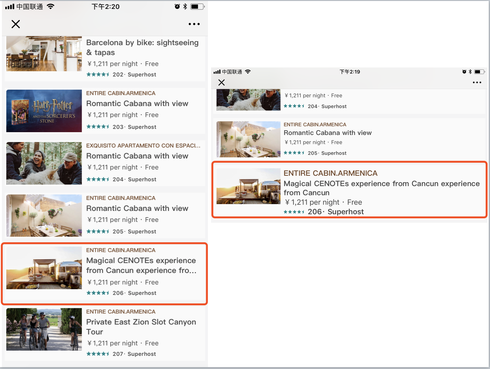

text-size-adjust bug 分析
某日，同事 J 说发现一个奇怪的现象：一个列表页，在 iPhone7 竖屏上字体大小正常，横屏的时候有些字体就变的特别大。本文便是笔者对这一 “bug” 的分析过程。
拿到那个页面，在 MacOS Chrome 下模拟了 iPhone7 的设备，发现横竖屏都是正常的。又在自己的手机上测了一下，果然重现了。如下图：

因为这个页面是响应式页面，对手机横版做了适配，笔者猜测可能是对应的样式没应用上。但转念一想，不对啊，就算是样式没应用上，也应该是整个列表都有问题，不可能就那一个 item 字体有问题。在调试了几次样式无果后，笔者猜测是 webkit 对字体在某种情况下的“人性化智能”缩放导致，类似桌面端的 Chrome 对 12px 以下字体的限制，具体是什么原因导致的不知道。Google 一番发现有个属性很可能是导致这个 bug 原因：text-size-adjust。
引用 MDN 上对 text-size-adjust 的解释：
text-size-adjust 属性 允许我们控制将文本溢出算法应用到一些手机设备上。这个属性还没有写进标准，使用时必须加上前缀：-moz-text-size-adjust，-webkit-text-size-adjust,，和 -ms-text-size-adjust。
因为缩放适配小屏幕而导致文字会变得很小，许多手机浏览器会使用文本溢出算法让文本变大而更易读。当一个包含文本的元素宽度用了 100%，他的文本大小会增加直到达到一个易读的大小，但是不会修改布局。
So? Feature not bug?????
笔者尝试在 item 容器样式上加了一个 -webkit-text-size-adjust:none，发现样式正常了。
到底是什么情况下 text-size-adjust 会自动调整呢？笔者写了几个例子，来还原这 bug，注意使用 iPhone 打开，并观察横竖屏：
分析了一下 text-size-adjust 出现的可能情况：
- 容器宽度为百分比，不光 100% 的时候；
- 列表项中至少有 2 个元素应用了相同的字体，单个元素没有出现放大的效果；
- 容器宽度比 viewport 的宽度大，不论是百分比
120%还是固定值 px；
修复的方法：
- 设置一个比 viewport 窄的固定值；
- 在外层样式上应用
text-size-adjust:none或text-size-adjust:100%，两种设置等效，没有用 autoprefix 的同学记得加上厂商前缀，经测试，不带-webkit前缀的text-size-adjust:none是无效的。
另外，text-size-adjust 在 iPhone 上默认值为 auto，iPad 上的默认值为 none，所以 iPad 并不会出现该 bug。
参考：